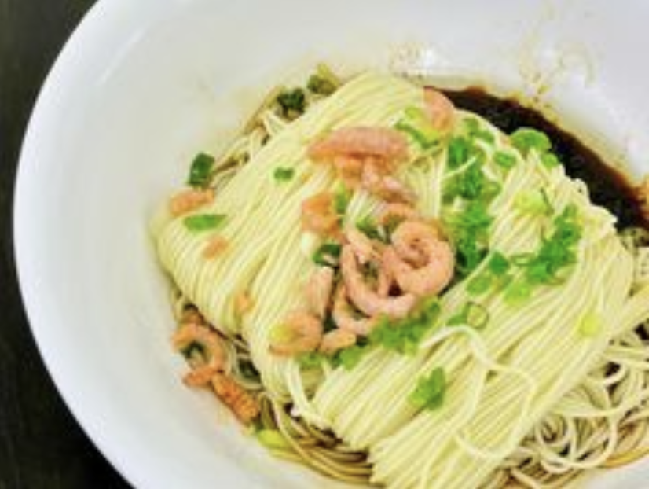
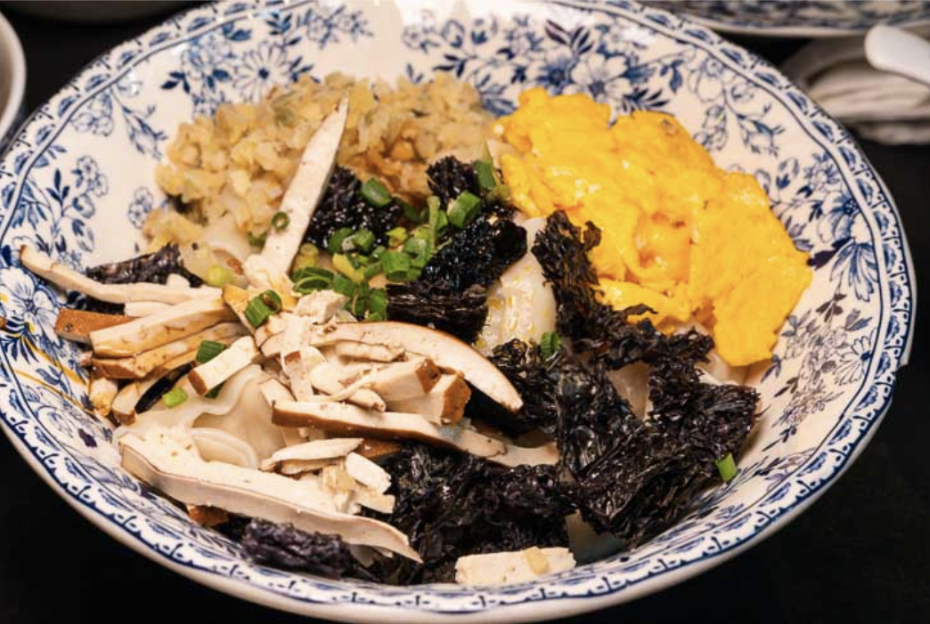
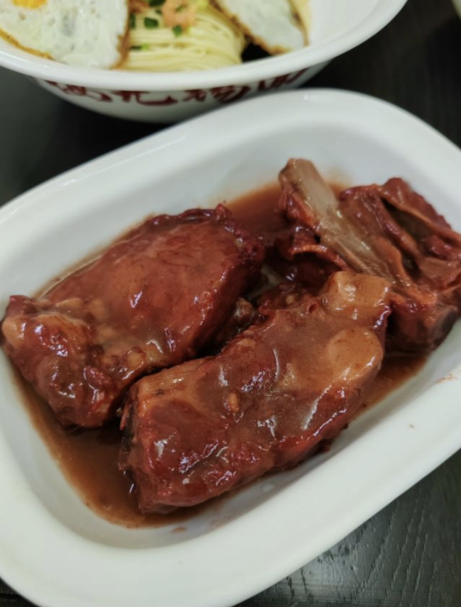

1:30 pm, Jing Mei Wu Xi Noodle House (井梅无锡面馆, jing mei wu xi mian guan)



This casual noodle shop instantly felt comforting. The style of the restaurant, from its furniture, to its silverware, and lighting all felt very homey. This simple restaurant served authentic dishes such as scallion oil noodles (葱油拌面, cong you ban mian), sauced pork chop (酱排骨, jiang pai gu), and wontons (太湖三白大馄饨, da hu san bai da hun tun).
I felt incredibly warm and inviting as the waiters led you to your table and served you a pot of steaming tea. Each dish was super flavorful and I came back every few days especially for their scallion oil noodles. The simplicity of the hand pulled noodles soaked in a mix of soy sauce and fragrant scallion oil was a flavor I kept wanting more of. This is a dish that I am confident everyone will enjoy and a food you must try if you ever visit Shanghai. It provides the perfect simple taste of Shanghai that will last forever in your memory.